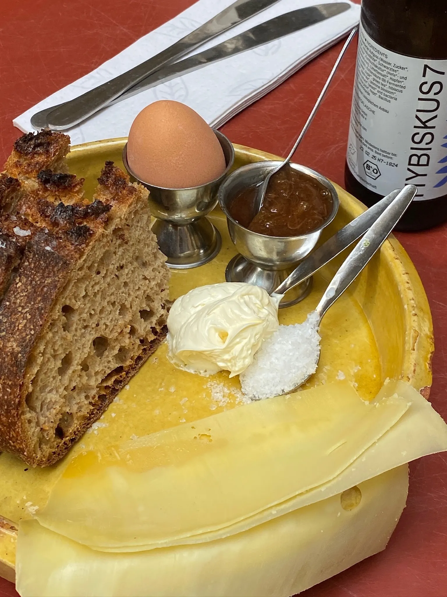
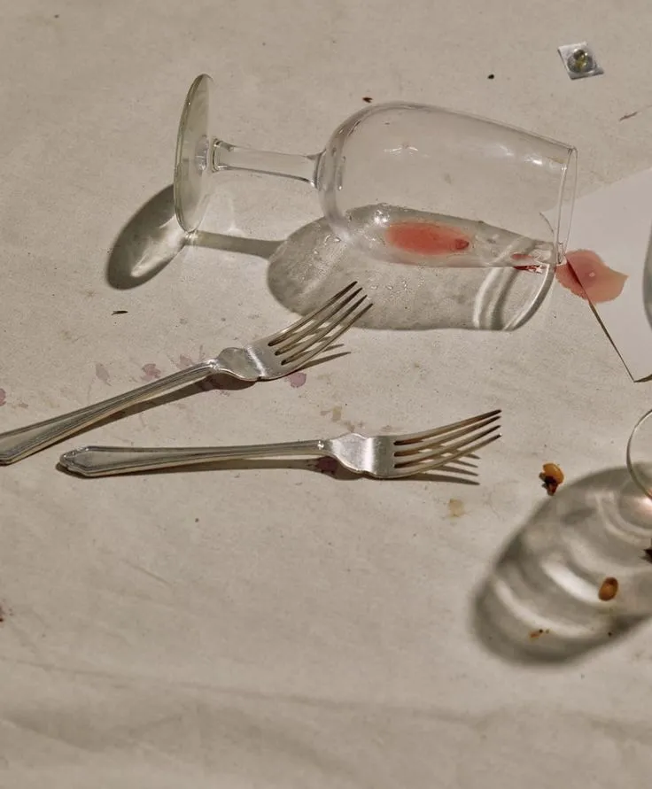
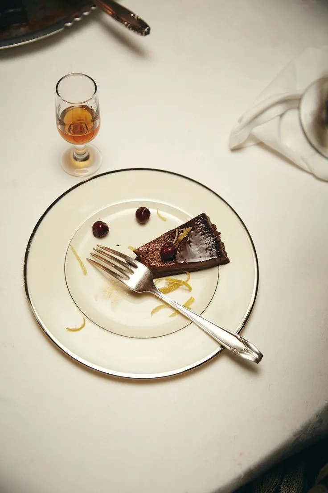
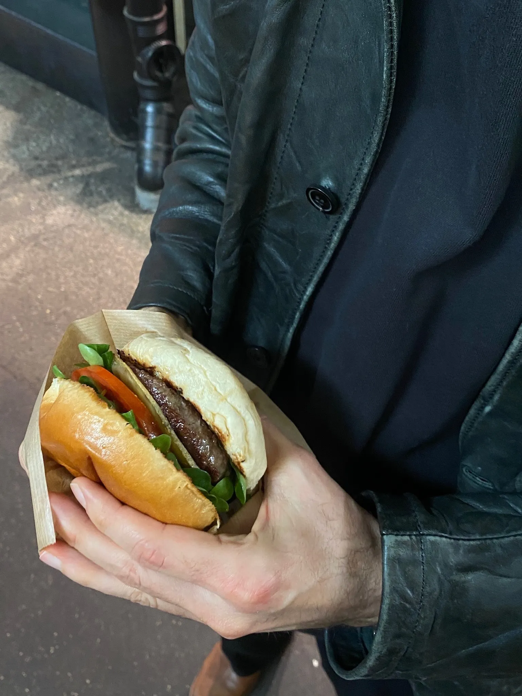
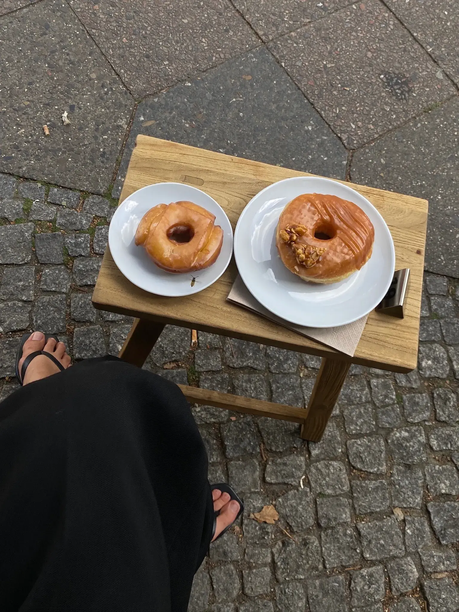
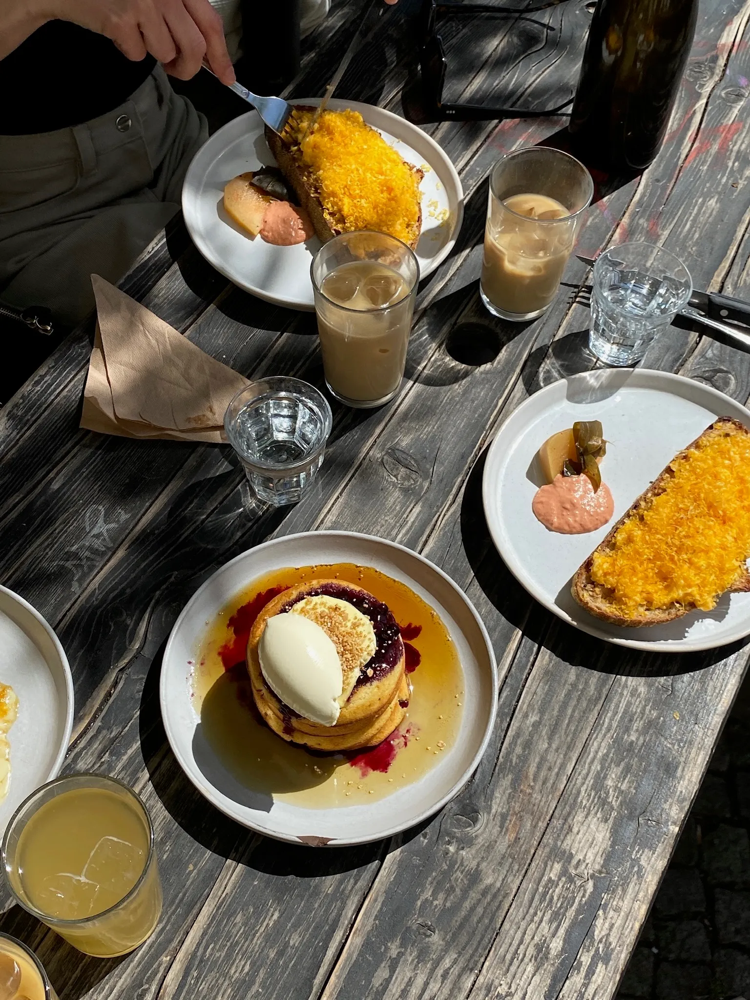
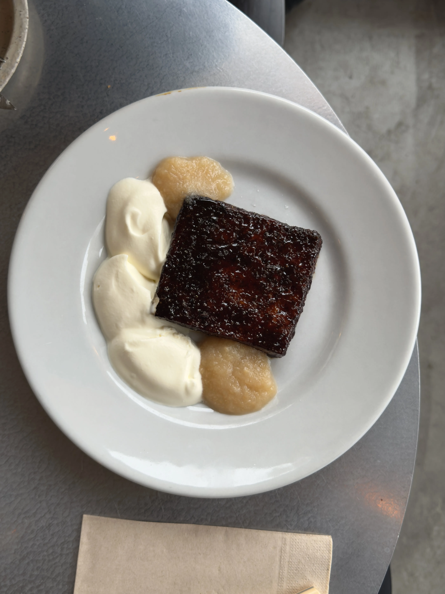
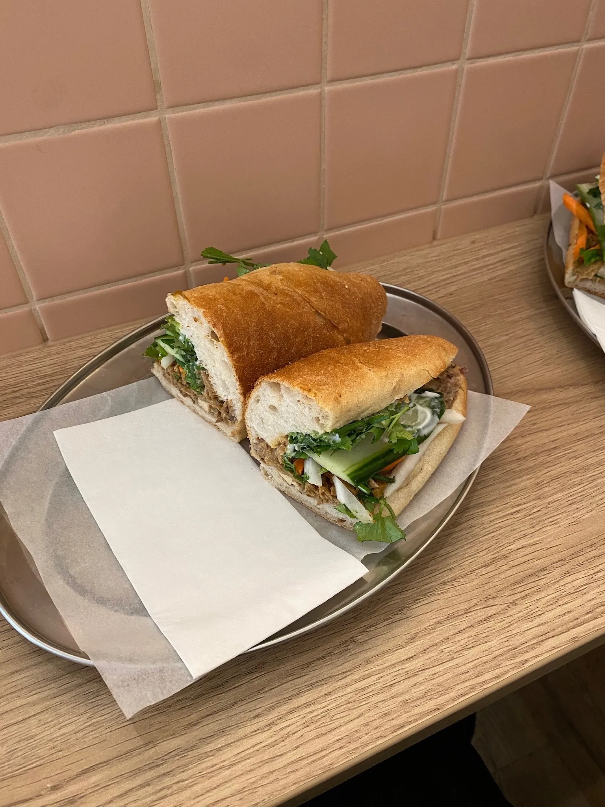
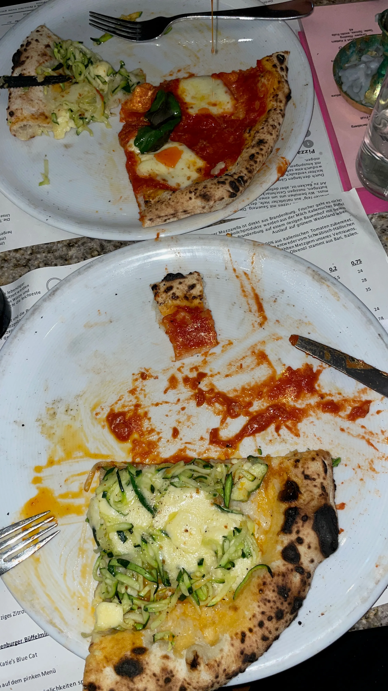

€Breakfast Plate
SOFI

Keine Listen. Keine Rankings. Jedes Restaurant hat ein Gericht, das du essen musst. Genau das zeigen wir dir.
Wir kommen aus Berlin. Wir kennen die Szene. Wir essen seit Jahren durch die Stadt — von versteckten Ramen-Bars bis zu Sterneküche. Wir wissen, wo der Burger am besten schmeckt, wo das Ramen dich umhaut und wo du das Croissant findest, das dein Leben verändert.
Wir testen jedes Gericht persönlich. Wir sprechen mit Köchen, Besitzern, Stammgästen. Und dann empfehlen wir dir nur das, was wir selbst wieder bestellen würden.


Berlin
The dishes you can't leave Berlin without trying.

€SOFI

€Atelier Dough

€Kitten Deli

€€Julius

€Saveur de Bánh Mì

€€Standard
.webp) €
€
Kitten Deli
Berlin

Drei neue Ramen-Läden haben in den letzten Wochen ihre Türen geöffnet — und alle setzen auf handgezogene Nudeln und 18-stündige Brühen. Wir haben alle drei getestet.

Die beliebte Markthalle in Kreuzberg erweitert: Im zweiten Stock entsteht ein komplett neuer Bereich für internationale Street Food-Händler.

Die neue Michelin-Guide-Ausgabe ehrt Berlins demokratische Fine-Dining-Szene. Fine Dining muss nicht teuer sein.

Berlin ist zur Donut-Hauptstadt Europas geworden. Wir haben 20 Shops probiert und die besten zehn ausgewählt.
Navigate
Every Must Eat pinned. Tap a spot, eat it all.